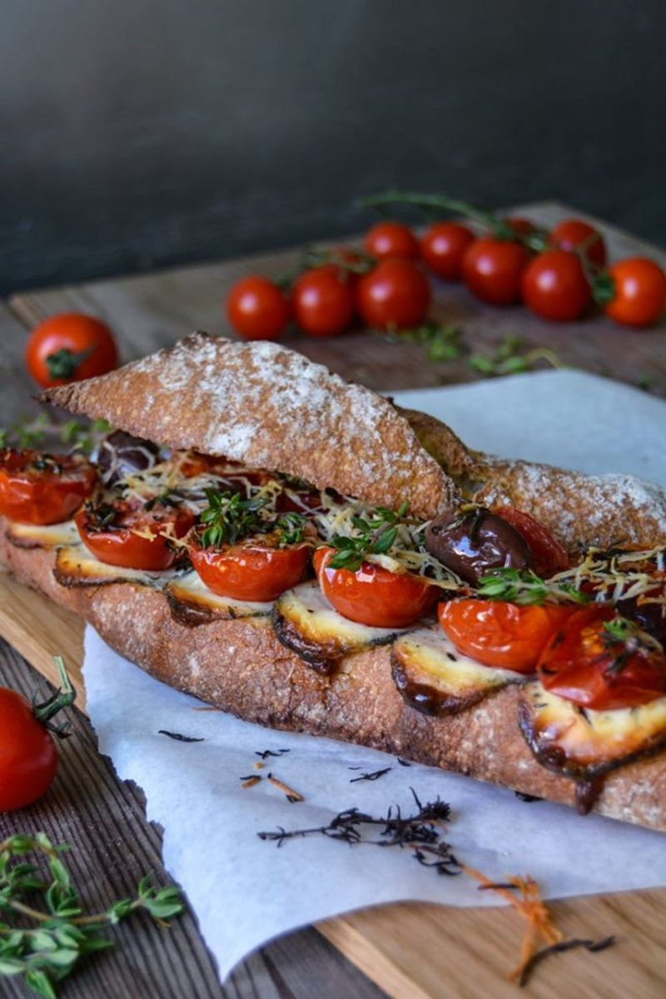

Grilled Tomato, Chèvre and Thyme Baguette Sandwich

Description
Many summers ago, I spent a few wonderful weeks at the Côte d’Azur
with my aunt, uncle and cousins. We stayed at a beautiful house
in the middle of the green hills around Grasse, a picturesque town
which is also called the world’s capital of perfume. I think I wrote
about this trip last year but after almost 500 posts I’m losing track!
Never mind, I often sat with the girls of the family, my aunt and two cousins,
at the pool in the garden. It was a little French paradise with all kinds
of flowers, lavender, jasmine and roses turned this place into the most
fragrant oasis. We had our girl chats, chilled, swam and ate, a perfect holiday!
Ingredients
- rustic French baguette around 25cm
- olive oil 2 tablespoons
- chèvre, very thinly sliced, 70g
- cherry tomatoes, cut in half, about 6
- black olives 6
- garlic, thinly sliced, 1 clove
- fresh thyme leaves, from a small handful of sprigs
- pecorino, freshly grated, 2 generous tablespoons
- black peppercorns, crushed in a mortar
Steps
- Set the oven to 220°C
- Place the bottom half of the baguette on the lined tray,
brush the bread with 1 tablespoon of olive oil and spread
the chèvre and then the tomatoes and olives on top.
- Sprinkle with the remaining olive oil, thyme, garlic,
pepper and pecorino. Bake in the oven for about 20 minutes
or until the cheese is melted and the tomatoes are soft.
- You can also bake the top half of the baguette for the last
few minutes. When it’s done, sprinkle with a little fresh thyme,
season with salt (if necessary) and enjoy!
Back to main page